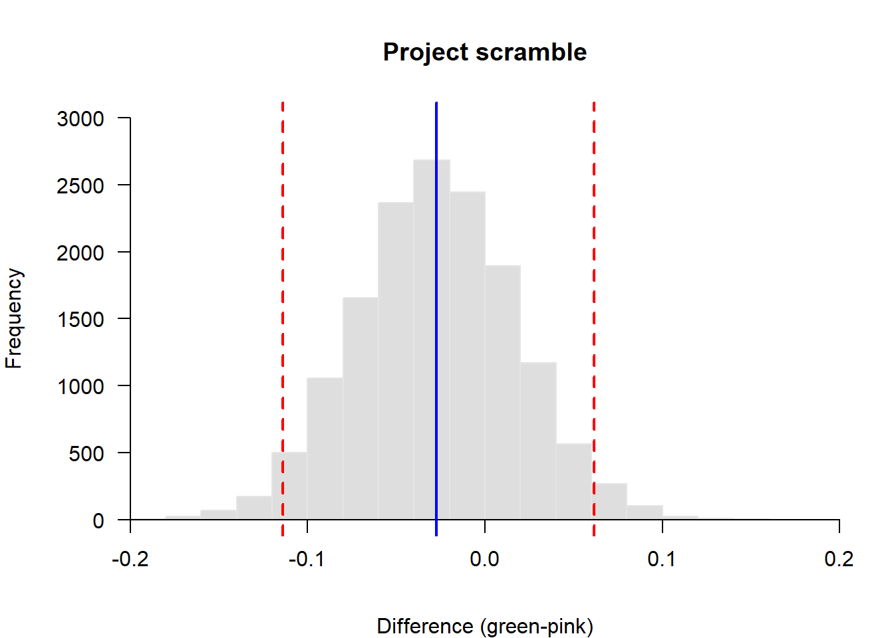

This is an extra example to help you along with the homework example this week since it is your first time doing this.
The example comes from a board game called Scramble (or Perfection). It works like this . After mastering the game, one of my kids and I got bored, so we made up our own way to play. Because we could both get all of the pieces in our side before time ran out, we started betting on who would retain the most pieces on their side after time ran out and the board popped.
It didn’t take long before the kid accused me of having the easy side, so we designed an experiment to test the null hypothesis that the probability of retaining pieces was different between sides of the board.
We played the game again 10 times. Each time, we kept track of the number of pieces that popped out of the board from the starting total on each side (N = 18).
The data for the study look like this:
# Read in the data in wide format
scramble <- read.csv('classData-master/projectScramble.csv')
# Stack the data into long format and assign names to each side
# of the board, adding the total number of starting pieces (18)
scram <- data.frame(stack(scramble, c('green', 'pink')), total=18)
# Have a look-see:
scram values ind total
1 2 green 18
2 7 green 18
3 2 green 18
4 4 green 18
5 4 green 18
6 6 green 18
7 4 green 18
8 2 green 18
9 3 green 18
10 6 green 18
11 3 pink 18
12 3 pink 18
13 4 pink 18
14 3 pink 18
15 4 pink 18
16 7 pink 18
17 8 pink 18
18 3 pink 18
19 3 pink 18
20 7 pink 18Next, we’ll take care of some front-end needs by loading necessary libraries and creating some functions that will help us process our results.
# Load necessary packages
library(R2jags)
# Create function to invert logit link function
inv.logit = function(x){
exp(x)/(1+exp(x))
}
# Make a function to get lower 95% credible limit with short name
low = function(x){
quantile(x, probs=c(0.025))
}
# Make a function to get upper 95% credible limit with short name
up = function(x){
quantile(x, probs=c(0.975))
}Now, we need to write out our model in BUGS language so that JAGS can read it.
Here, we are assuming a binomial likelihood that uses a separate probability of success for each color (green or pink). This indexing is a little funky because we think of color as a character string or a factor. We will see below that we have to convert color to a number for the indexing to work in the likelihood.
Then, we define some priors for p. Here, we just loop over the number of colors and define the prior for each p using a beta density with parameters of shape1 = 1 and shape 2 = 1 to achieve a uniform (flat) density on the interval [0, 1].
modelString = "
model{
# Likelihood
for(i in 1:N){
Y[i] ~ dbinom(p[color[i]], n[i])
}
# Priors
for(j in 1:ncolors){
p[j] ~ dbeta(1, 1)
}
# Difference between colors
diff <- p[1] - p[2]
}"Now, Package the data for JAGS
vb_data = list(
Y = scram$values,
n = scram$total,
N = nrow(scram),
color=as.numeric(as.factor(scram$ind)),
ncolors=length(unique(scram$ind))
)Parameters monitored
Initial values for parameters. We need to give JAGS one initial guess for each of our p’s (one for green and one for pink).
MCMC settings
ni <- 50000 # Number of draws from posterior (for each chain)
nt <- 5 # Thinning rate
nb <- 25000 # Number of draws to discard as burn-in
nc <- 3 # Number of chainsCall jags and run the model
vb_mod <- jags(data=vb_data, inits=inits, params,
textConnection(modelString),
n.chains = nc, n.thin = nt,
n.iter = ni, n.burnin = nb,
working.directory = getwd())Print a summary of the model and check yo diagnostics. Notice that we have two estimates of p: one for each color!
print(vb_mod)
Inference for Bugs model at "4", fit using jags,
3 chains, each with 50000 iterations (first 25000 discarded), n.thin = 5
n.sims = 15000 iterations saved
mu.vect sd.vect 2.5% 25% 50% 75% 97.5% Rhat n.eff
diff -0.027 0.045 -0.114 -0.058 -0.027 0.002 0.062 1.001 15000
p[1] 0.225 0.031 0.168 0.204 0.224 0.245 0.288 1.001 15000
p[2] 0.253 0.032 0.192 0.230 0.252 0.274 0.319 1.001 15000
deviance 81.326 1.999 79.388 79.908 80.708 82.078 86.682 1.001 15000
For each parameter, n.eff is a crude measure of effective sample size,
and Rhat is the potential scale reduction factor (at convergence, Rhat=1).
DIC info (using the rule, pD = var(deviance)/2)
pD = 2.0 and DIC = 83.3
DIC is an estimate of expected predictive error (lower deviance is better).Save the posteriors to new objects with short names
difference <- vb_mod$BUGSoutput$sims.list$diff
green <- vb_mod$BUGSoutput$sims.list$p[,1]
pink <- vb_mod$BUGSoutput$sims.list$p[,2]Graph the difference between green and pink
par(mar=c(4,4,4,1))
hist(difference, col='gray87', xlim=c(-.2, .2), axes=F,
ylim = c(0, 3000), main='Project scramble',
xlab='Difference (green-pink)',
border = 'gray90')
axis(1, pos=0)
axis(2, las=2, pos=-.2)
abline(v=mean(difference), col='blue', lty=1, lwd=2)
abline(v=quantile(difference, c(0.025, 0.975)),
col='red', lty=2, lwd=2)
This work is licensed under a Creative Commons Attribution 4.0 International License. Data are provided for educational purposes only unless otherwise noted.